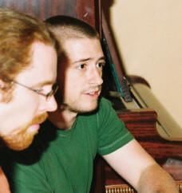
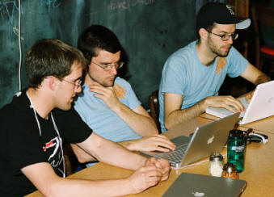
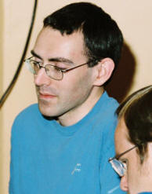

Viaggio
Note
V060601
Logic, Language, and Computation
2006-06-06 SeaFunc Meeting
|
|
Viaggio
Note
V060601 |
1.00 2022-05-06 -12:10 -0700 |
|
||||
Second Time OutThis is the second gathering of the SeaFunc group that I attended, three weeks after the first. My adventure was finding a bus route into a neighborhood I'd never reached that way. It worked out very well. It was noisy in this restaurant. I found it difficult to hear conversations with others than those right next me. I liked the people and the service. My time was mostly devoted to learning where people were using functional programming. There seemed to be experience with more than one system and far more fluency than I have ever managed, often with more than one language in this category as well as the well-known popular programming languages. The Surprising Features of Chicken Lisp
Prior to the meeting I had learned about Chicken Scheme from Brandon J. Van Every. Chicken Scheme compiles Scheme to C Language. The run-time model integrates into standard C program execution. The way the C Language code works quickly is by the use of a modification of the zone garbage-collection model that Henry Baker built atop the Cheney list-copying mechanism. Henry's scheme does construction of pairs (cons cells) on the regular stack, so that construction is very fast since no memory block allocation is required. In addition, those cells that have a short lifetime are quickly swept off the stack after a Cheney copy of those cells that must be preserved, with the stack simply retreated to reclaim all of the vacated space and leave conventional calling programs none the wiser. Flash From the PastI had experimented with a similar scheme in the early-80's Miser experiment in Intel 8080 assembly language on a Heathkit H8 computer. That was in-fact inspired by Henry Baker's earlier paper on zone garbage collection with Cheney copying. I don't think Henry and I ever discussed the use of the stack for probably-short-lived cons and other cells and we have not spent any time talking face-to-face since about 1980. It never occurred to me that the Zoned-Cheney idea could be done safely on the stack in a mixed execution model with the hardware stack also used for ordinary procedure frames such as those required by C, C++, and most-importantly perhaps, Microsoft Windows. I simply forgot about the approach when I moved up to using higher-level languages and we evolved through the extremely limited 8086 and 80286 execution models. Now I wonder how much mileage I could get out of on-the-stack consing in a Pentium implementation of Miser when I actually get beyond coding a pure Component Object Model (COM) reference implementation. I am not at all adverse to building a core Miser interpreter loop in assembler and the performance gains in delaying creation of heap cells could be outstanding. Henry's technique seems very useful in this regard, along with some ideas I have about coalescing/caching common structures. I can see I need to think about the prospects for rapid recursive-descent parsing with backtracking in this structure too. This is very much like exception handling by continuations for already-executed code, and I am now very curious. These techniques probably won't carry over to a .NET/CLI implementation, and that will make for a very worthwhile experimental comparison too. Brandon didn't expect to be at the meeting, but he did arrive. He was having difficulties with Chicken Scheme builds, but I couldn't understand what the problem is. He's doing a bootstrap, I think, and that makes it hard to talk about without pictures. I also notice that I think better when engaged in solitary writing, even though my inspirations often come out of tangential conversations and discussion list posts with others. The preceding paragraphs are an example of how that all falls into place for me. The Desire to Promote Our Favorite Languages
A number of people came to SeaFunc to see about recreating a Lisp group in the Seattle area. After the meeting, a LispSea group was formed. I watch the distribution list, but I am not inclined to go chasing after Common Lisp. Scheme is already too much Lisp for my taste, which runs to tiny functional languages closer to Landin's Next 700 Programming Languages view. I'm also not interested in an adoption-advocacy group, and there seems to be strong motivation in this new group to be Lisp evangelicals. I may be interested in the expertise this group attracts, and any interesting projects they undertake, but I am not into advocacy other than by examples of good work and contribution to our shared conceptual understanding of computation and powerful use of tools. Too Much Homework, Too Many Languages, Where to Begin?Meanwhile, I am keenly interested in how the Chicken Scheme system works out, and in Brandon's efforts with that implementation. I am also intrigued by the deployment aspects of a compiled Scheme that can be a source of components that integrate into other programming platforms and execution models. I was already interested in Haskell for its approach to introducing imperative and interactive operations in a purely-functional system. I don't understand enough about monads yet to see if that can help me with moving up the Miser progression while retaining the mathematically-clean bits in a valuable way. It looks like I need to know more about Scheme and about OCaml (Objective Caml) as well. This begins to look overwhelming, along with the other projects that already command my attention. Still, I need to see what solutions to imperative and interactive semantics are available in these existing systems. And my meeting and listening to these folks has me even more resolved to resume work on Numbering Peano and the handling of computational models in the Miser Project. I just skipped my third SeaFunc meeting, hoping to have some results instead. Creating this folio, along with some Numbering Peano postings is my offer back to the SeaFunc crowd and how they are an inspiration to me. -- Dennis E. Hamilton |
||||
|
 |
 |
 |
||
|
Jeff Henrikson and Gregory Martin Pfiel at the SeaFunc table. |
Beside the SeaFunc conversations, one trio at a neighboring table was meeting about Ruby. |
David Bremner thinking over a SeaFunc question. |
||
|
|
You are navigating Orcmid's Lair |
created 2006-06-30-13:04 -0800 (pst) by orcmid |